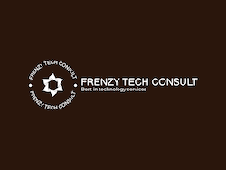
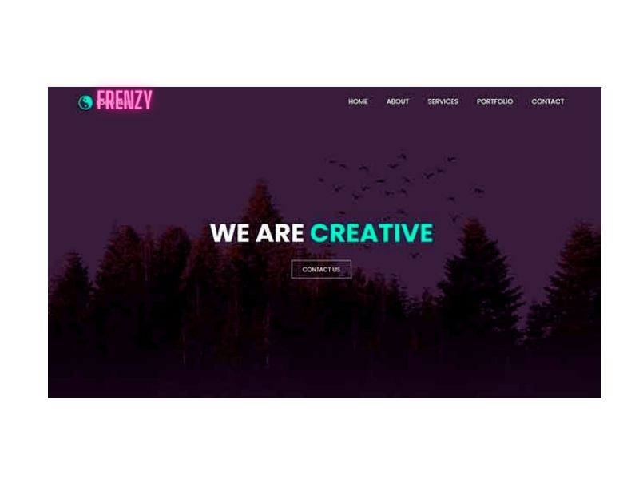
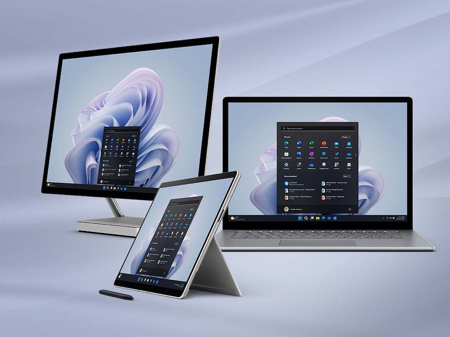
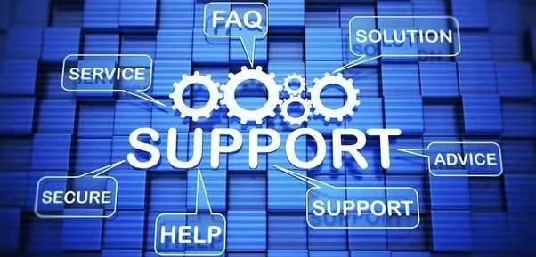
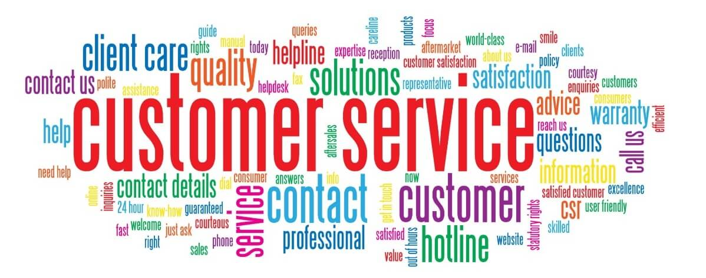
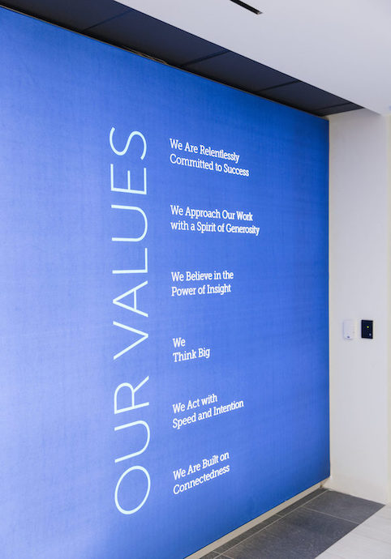
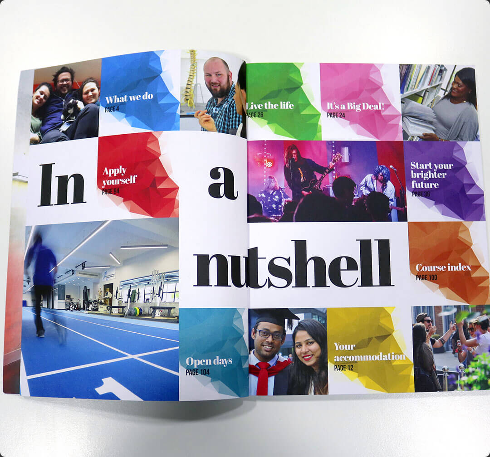
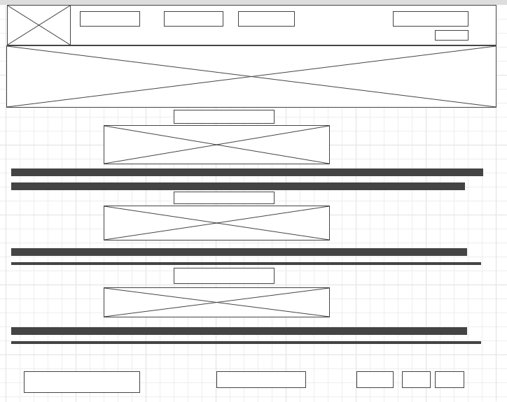
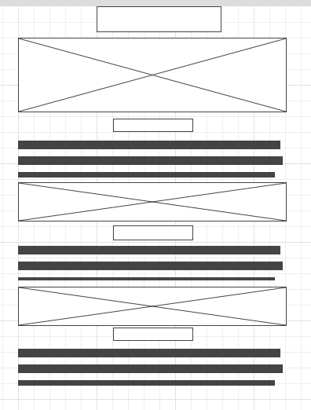
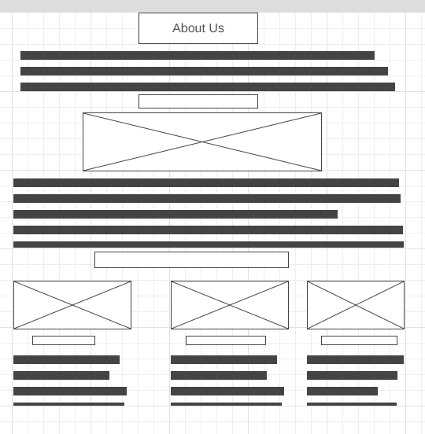

Overview
Purpose
Do you love or enjoy extending helping hand to others? Do you want to create an educational program, raise funds to support children and younger generation in your locality through providing scholarships and training programs? Are you hoping to get a good website layout for your Non-governmental Organization or other businesses? Frenzy Tech Consult is the perfect place to tailor your IT needs to. We are local business helping other businesses or organizations to manage their IT concerns. Our focus is specializing in website designing, networking and communications
Audience
We plan to give the best of service to individuals and organizations either those that are starting new or those that are already in existence. We have 24/7 team available also, for people who wants an expedited service any time of the day. We also provide training and supply IT equipment to anyone interested in installing the best technology at home, school, or workplace. With Frenzy Tech Consult, solving your IT problems our priority to make life comfortable.
Branding
Website Logo
Style Guide
Color Palette
Palette URL: https://coolors.co/396e94-e7c24f-a43312-381d2a-aabd8c| Primary | Secondary | Accent 1 | Accent 2 |
|---|---|---|---|
| [#c8d5b9] | [#696d7d] | [#11472d] |
Typography
Heading Font: sans-serif, Lato, Helvetica
Paragraph Font: Roboto, Merriweather, Pacifico
Normal paragraph example
Nothing to see yet.
Colored paragraph example
Nothing to see yet.
Navigation
Site Map
Content
Home page
Your Number One Solution Center
To make sure our clients stay in touch and get a timely solution to their challenges, our web page has a column where questions and concerns may be put in and the online customers service teams of Frenzy Tech Consult will be ready to resolve these concerns in a timely manner. We give visitors an easy way to reach us. Our comment box is there to have our clients communicate directly with us because we make everyone part of us. The site-speed is very high which make it possible for visitors to the web page navigate through easily. Our page is user-friendly which means that our visitors will feel at ease when navigating through it – whether it’s reading our content, browsing for something, clicking on buttons, filling out forms, or something else. We will provide accurate contents and updates that are not misleading and, provide correct contact and links that visitors will rely on for information.
Our mission is to make people and organizations better tomorrow than they were today. No matter where you’re working, you need an IT support partner who has your back and can help you at a moment’s notice. We deliver results and are obsessed with excellence. We value a results-driven culture where we work together to deliver the absolute best in everything that we do. We work relentlessly until we deliver the results we promised. We hold each other accountable to achieving our goals and objectives.
Images for the Home page
IT Training
Services
Data Center
Our Data Centre Solutions are the answer to your enterprise’s growth and meeting the challenges of your business’ application requirements. Today’s applications require rapid and continuous delivery as they are highly virtualized, run on multiple hypervisors, and are more distributed than ever
End-User Computing
Our Data Centre Solutions are the answer to your enterprise’s growth and meeting the challenges of your business’ application requirements. Today’s applications require rapid and continuous delivery as they are highly virtualized, run on multiple hypervisors, and are more distributed than ever.
Local and Wide Area Network
Our Network Services is designed to improve your business’ networking infrastructure and deliver applications and data at the fastest speeds across your network. From diagnosis to optimization, we deliver network solutions that boost your infrastructure’s performance and connectivity.
Cyber Security
Frenzy Tech Cunsult’s Cyber Security Solutions safeguard your business at every touchpoint from computers and servers to mobile and other electronic devices and networks, from attacks. We deliver customized plans that work for end-user protection built for your industry and your security needs.
Images for the Services


About Us
Who We Are
About Us
Who We Are
We are the leaders in developing a digital economy in the region through our expertise in systems integration, software development, and IT skill-development programs. We’re committed to seeing Ghana emerge as the leader in IT skills and services.
We prioritized individuals concerns when it comes to anything relating to technology. We believe technology plays an important role in our society today and is something that is controlling the world today. It affects the way individuals communicate, learn, think, and helps society and determines how people interact with each other daily. We are trustworthy, determined, and focus on giving the best of service to individual and organizations at their own comfort. To make this a reality, our team will be available 24/7 from Monday to Saturday to assist clients with delivery, servicing, and training. Emergency services may be provided on Sundays and public holidays because we believe that we will stay in business forever if customers that patronize our services are giving the best for them to also progress and flourish.
Our Values
Our business is built on a strong set of core values that have shaped our growth and continue to guide our relationships with our customers, partners, and our employees.
Our Leadership
Our leadership brings together a diversity of experience in the fields of technology, business, education, and philanthropy. We champion the ethos of collaboration and transparency, that enables us to have a team that is driven, passionate, and approachable.
Integrity
Our teams conduct themselves with integrity and uphold the ethics of doing business in all our interactions.
Commitment
We are committed to the growth of the communities in regions where we function.
Images for the About Us
 Wireframes
Create three wireframes for your site. One for each page and list them here
Home
[Any additional details about home that the wireframe does not make clear]
Services
[Any additional details about "Services" Page that the wireframe does not make clear]
About Us
[Any additional details about "About Us" Page that the wireframe does not make clear]
